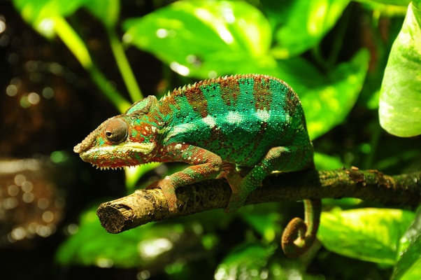
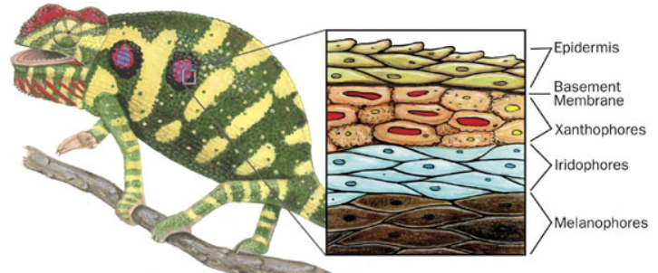

Venzil Lawrence
BE in Computer Science Engineering, St. Joseph Engineering College, Mangalore (Expected 2027)
What is the best thing you learned today!
I finally figured out how chameleons are able to change colour…. I've been curious about it since I was a kid.

Chameleons change colour because of special cells in their skin called “Chromatophores”... These cells contain pigments that give color to the chameleon's skin.
Now… there are three main types of chromatophores:
- Melanophores (dark pigments).
- Xanthophores (yellow and red pigments).
- Iridophores (reflective pigments) .

Underneath the chameleon's skin, there are tiny muscles connected to the chromatophores….
These muscles help move the colour around. Signals from the chameleon's brain and nervous system tell these muscles what to do.
When the muscles squeeze a chromatophore, it gets smaller and shows a different colour.
like this:
There are hormones like Melanocyte-Stimulating Hormone (MSH) which play a role in activating chromatophores.
Colour change isn't just for fun…it's serious business for chameleons. They use their colour-changing power to talk to other chameleons… Dark colours may indicate that they're in stress… Bright colours can mean they're ready to mate or want to show they're boss. They also use it to hide from predators
That's how chameleons are able to change colours.. ;)
144 views
-1 upvote
-5 shares
1 view